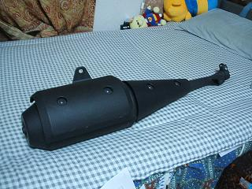
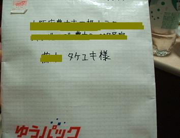

日々、想ふ
〜過去感じたことがつれづれと〜
（できるだけ最大化してお読みください）
日々、想ふ
最近よく流れてますよね。５/３１
何日か前に業務用スーパーで冷凍食品を買いだめしました。
今日おかんから冷凍食品が大量に届きました。
冷凍庫が飽和状態というかがんばって詰めたんだけど
冷凍庫の扉から冷気がもれてます。
というわけえで今日は昼ごはん、晩ご飯と冷凍食品食べまくり、タケユキです。
ここ一週間近く炭酸の飲み物を絶っています、断飲です断炭酸。
最近まで黒酢を飲んでたんだけど黒酢を飲むときにコーラで割ってたら
体にいいものと体に悪いもので割って飲んだとしても
結局のところプラスマイナス０だろという指摘を受け、
炭酸を、というか三ツ矢サイダーを飲んでいません。
そう我慢しながら今日もテレビを見ていたら、
ハート〜の〜おくに〜ふるあめ〜♪
抱いてぼくらはたびにでる♪
な〜みだ〜のち三ツ矢サイダー♪
・・・飲みてえ。
今日の三ツ矢サイダー：CM曲はGOING UNDER GROUND「STAND BY ME」
久しぶりに。５/３０
授業中寝る癖が直りません、タケユキです。
今日は学校終わってから飲みに行ってきました。
終始のほほんとした空気で、
たまには店で飲むのもいいもんだ。
今日の飲み：安くしてもらいました。
おやすみ。５/２９
バイトから帰ってきてぼーっとしてたら午前２時になってました、タケユキです。
寝ないと明日もたないので今日の日記おやすみー。
それではおやすみ〜。
今日のバイト：しんどかったー。
溜まる、ストレス。５/２８
今日は超安全運転してました、
なんやのあの異常な渋滞は全然進まんやんけ、タケユキです。
土日はここ最近ずっとバイト。
今日はそんなに忙しくなかったけど
客がダメダメやった。
２時間の飲み放題だからって２時間ギリギリまで頼めるわけねえだろ、
だいたいが２時間飲み放題は１５分前にラストオーダーだろ。
頼むから幹事、しっかりしてくれ。
なんで俺がドリンク頼みに来たお客一人一人に説明せんといけんのや。
明日はもっといいお客だったらいいなあ。
今日のお客：どっかの大学のサークルの飲み会。
パッと見。５/２７
seagulって単語をパッと見たときセガールって読みそうになりますよね。
セガール（スティーブン）
映画「沈黙の〜」シリーズで有名ですよね。
seagulは正しくは「かもめ」って意味ですよ知ってましたか？タケユキです。
今日は学校ではひとつの科目で中間テストがありました。
持ち込み可だったし過去問やってたから大丈夫かと思います。
学校終わってバイク屋に行ってマフラーを交換してきました。
新しくマフラーを買ったわけだから俺の持ってるマフラーは全部で２つ。
１つ余ります。
でも一応持ってるに越したことはないってバイク屋の人が言うから
がんばって持って帰ることに。
というかがんばったのは俺の運転するバイクの後ろで
重たいマフラーを持ちながらバランス取ってた友達なんだけど。
家帰って俺の乗ってたバイクのマフラーを改めて見ると

これってただのこん棒にしか見えないのは俺だけ？
今日の俺のバイク：いい音するようになりました。
もはや車以上。５/２６
明日は中間テストですよ、タケユキです。
今日バイクで買い物行った帰りのこと。
赤信号で止まってふと横を見たら
ゴールドウイングが止まってた。
乗ってたのは６０過ぎくらいのおじいさん。
サングラス、革ジャン、革手袋をまとったおじいさんしぶすぎ。
ゴールドウイングはたまに見ることがあるくらいだけど、
近くで見るとめっさでかい。
噂ではバイクのくせに６連奏CDチェンジャーがついてるとか、
バイクのくせにワイパーがついてるとか。
今日見かけたゴールドウイングはカーナビがついてた。
カーナビ？
バイクなのに？
今日のゴールドウイング：さすがバイクのくせに３００万超えるだけあるわ。
いつのまに。５/２５
中間テストに向けて勉強をしてたつもりだったんだけど
気付いたら右手に持っているのはシャーペンではなくてお酒。
気付いたら左手に持っているのは教科書ではなくて枝豆、タケユキです。
さらになさけないことに
日記を更新する前に気付いたら夢の中。
何事も後手に回ったような一日でした。
今日の後悔：明日こそはちゃんと勉強を。
なんとか何事もなく。５/２４
うちの学校の授業は催眠術でもかけながらやってるんだろか、
寝てばっかりだった自分に自己嫌悪、
最近こういうこと多いです、タケユキです。
今日は学校終わって勉強しようと思ってたんだけど
急遽バイトになったんでそれから梅田へ。
がんばって働いてバイト終了。
梅田から家に帰るときはいつも新御堂を通って
中環(中央環状線)に乗って帰るんだけど
今日はたまにはと思って１７６号線、通称イナロクを通って帰ってきました。
新御堂と違って１７６は信号が多いし車線も
２車線あったりなかったりだから
そんなにスピードは出せなくてちょっと時間かかったけど、
いつもと違う景色の帰り道は新鮮で。
テンションも不思議とあがる。
直線で少しスピードをあげると前のほうから
テールランプが２つ近づいてきた。
車道の中央を併走してたのは２台のカブ。
「カブが道路の真ん中を走ってんじゃねえよ」
少し気分も乗ってる俺は真ん中をトロトロ走るカブを後ろからあおる。
−−−ゆっくり走ってんじゃねえぜ、俺のバイクはこんなもんじゃねえ。
それでも横に避けようとしないカブ。
強引に追い抜こうかと思ったけど
ちょっとそれは危ないだろうからやめて２台のすぐ後ろを
近すぎだろってくらいにプレッシャーを与え気味に走った。
ほどなく信号が赤のところに差し掛かる。
テンションがあがっていても信号を無視することはなく停止。
その時月明かりの下に照らしだされた２台のカブのヘルメット、
ヘルメットの後頭部には大阪府警の文字。
ひえええええ！！！！！
今日の帰り道：無理な追い抜きしなくてよかった。
鼻水が。５/２３
ガンダムのビデオを見るかエンジンを見るかでケンカして
ちょっと険悪なムードですよ、タケユキです。
今日は風邪で体調を崩してるのでおやすみします。
今日の分量：昨日の日記の十数分の一。
力不足。５/２２
今日あった出来事をまだ自分の中で整理できてないけど
ここに文章として残しておきたいと思う、
今日感じた気持ちを忘れないために。
この日はバイト終わった後にバイトのメンバーで飲みに行きました。
今月に入って二回目、
なんか最近バイトの人たちで飲むことが多い、
いやいいことなんだけど。
そういう飲み会の場ってのは
仕事中とは違う顔を見ることができる。
今日の飲み会で感じたのは
簡単には人には言えない悩みをみんなそれぞれが持ってるんだってこと。
俺はどちらかと聞かれたら間違いなく
自分の思ってることや悩みっていうのを
人に話したがるタイプの人間で、
悩みとかそういうものをずっと押しとどめておくとか
限界まで溜めるとかっていうものをあまり実感できずにいた。
でもそういうのを自分からは話せない人も、
世の中にはいるんだってことを感じた、強く。
みんなの前でそういう感情をあまり表に出さないような人が
そんな一面を見せるってことはよっぽどの事があったんだと思う。
普段みんなからクールって言われてる子の、
いきなり見せた涙は
今までの自分の中の価値観を一気に流し去ってしまうほど、
たくさん溢れ、止まらなかった。
悩みを溜め込んでしまうってことは仕方のないことなのかも
しれないけど、
せめて悩みを聞いてあげられる人間になれていたら、
少しでも悩みを減らすことができていたら。
相手がどう思ってるかはわからないけど、
多少なりとも近くにいると思っていた自分が
なにもできてなかったこと、
その子が限界なくらい自分の中に
いろんな悩みを溜め込んでいたことに気付けていなかったこと。
その場で俺にできたことは
お酒のせいもあって立つこともままならず
しゃがみこんでただ泣くだけの彼女を
タクシーに乗せて送り届けることだけ。
そんな自分の無力さにただくやしい思いをするだけだった。
そんな一日の中で唯一いいなと思えたことがひとつ。
タクシーに乗せる時、電話でその子のお姉さんと話をしたんだけど、
その時のお姉さんの声と、
家に無事着いたっていう報告をしてくれた時の
お姉さんの声が、
本当に別人としか思えないくらい変わってたこと。
最初に話したときは正直めちゃくちゃ怖いって思ったんだけど
二回目の電話は妹を想うお姉ちゃんって感じの
すっごいやさしい声になってた。
家族だから心配してたのは当たり前っていうかもしれないけど、
そういう言葉だけで片付けることはできないと思う。
どう言ったらいいか分からないけど、
家族っていう特別な存在がその子にもちゃんといるっていうことを
頭ではもちろん分かってたんだけど、
そういう存在を自分の目で、耳で、実感できたからなんだと思う。
家族になるとかそういうことではなくて
自分の周りの人の、
その人の、いい意味での特別な存在になりたいと思った。
たまには強引に。５/２１
９時間労働でしたよ、タケユキです。
今日のバイト先の結婚式の二次会は新郎がスコットランド人でした。
日本語がしゃべれなかったみたいで、
新郎が挨拶するときは新婦が通訳をしてました。
新郎が外国人ということはもちろん招待客にも外国人はいるわけで、
料理を出すとき「塩をつけてお召し上がりください」を
英語で言えない自分がそこにいる。
・・・・
更新続けようと思ったけど
今午前３時半、明日もバイトあるから寝る！
ではおやすみなさい。
今日の日記：オチが思い浮かばなかったわけではない。
身の危険を感じる。５/２０
晩ご飯を食べた後お腹の張りぐあいが少し気になりました。
・・・俺、太った？
あと２ヶ月ちょっとしたら夏なのに、
こんなお腹のままで、
人に見せられない(少なくとも自慢できない)お腹のままで
海の季節を、夏を迎えていいわけがないだろう。
別に海は己の腹筋を見せ合う場なわけでないのは重々承知の上ですが
こんなお腹のままで、
人に見せられない(少なくとも自慢できない)お腹のままで(二回目)
いることは罪なのはではないかと思います。
なので誰か腹筋を、というかお腹周りの無駄な肉を落とす方法を教えてくれ。
そういうのに詳しい友達に一人心当たりがあるので
明日かそこらにでも聞いてみよう。
いつものごとく前振りの方が長い日記になりそうです、タケユキです。
金曜日ってのは５限まで授業があります、
５限目は防災特論っていう科目で
化学実験の時とか、その他いろいろ事故に気をつけろとかっていう授業です。
こういう薬品の扱いはこうしろ、みたいな。
こういう機械の扱いはこうしろ、とか。
でも俺ら情報科の人間の実験とかってのは
パソコンの前に座ってカタカタやったり回路組んだりするやつだから
薬品の扱い習っても絶対意味ない気がするんだけど。
というわけで今日の防災特論の授業はサボって
アメ村に買い物に行ってきました。
金曜の夕方時ってのもあってか新御堂とか御堂筋の
車の込みようはかなりのもの。
すり抜けてすり抜けてすり抜けてたら
何度か車とぶつかりそうな危ない場面も。
これが危険な運転ってやつなんだな、と
俺は俺で防災特論の授業をやってましたよ。
今日のヒヤヒヤ：ガラスがスモークの黒塗りの車と急接近。
不可抗力ではありますが。５/１９
なんか地元で三丁目がKAT-TUNに似てるって話が出てるみたいですね、
(KAT-TUN：ポップジャムで堂本光一のバックダンサーとして
結成された６人組らしい←ちょっとネットで調べただけのあいまいな知識)
っていうかKAT-TUNって何て読むんですか？
カトツン？カットチューン？カトゥーン？
こんなグループがあることすら知りませんでした
もはやそういうのに興味のある年ではないからですか、タケユキです。
今日はいつものごとく塾のバイト。
そろそろ中間テストの時期ってこともあって
生徒がいろいろと分からない問題を聞いてきた。
「先生ここが分からへん」
「ここの問題はこうやってなぁ・・」
「先生あとここの式よく分からへん」
「この式はこうやって変形してなぁ・・」
俺ばっかりが問題解いてた気がするのは気のせいですか。
今日の私信：ガク例のブツ届いたわ、ありがとさん。
わざわざ送ってもらって言うのもなんだけど
宛名は本名で書け。頼むから。
俺の本名はタケユキじゃない。読み違える人もいるけども。

それにしてもちゃんと届いたってのもいかがなものか。
昨日は早く寝たんです。５/１８
昨日は日付が変わるくらいに寝ました、
なので今更新してます、１９日朝です、タケユキです。
学校終わってからちょっと走りに行こうと思ってたのに
授業が終わったころから雨。
なので家でレポート、昼寝、マンガ。
のんびりしてました。
結局今日も引きこもりみたいなもんですか。
今日の残金：今月あと２０００円。
引きこもりぽい。５/１７
dviファイルをpdfファイルに変換するのはdvipdfmxコマンドです、
忘れないように自分用にここにメモしときます。
意味わからんって人は別に気にしないでください。
忘れたころに役に立つんですたぶん、タケユキです。
というわけで今日は学校で授業受けた後に
ちょっと演習室(パソコンがいっぱいある部屋)にいました。
外出してることはしてるけど
なんか春っぽくない、なんか輝いてない。
明日天気がよければちょっと遠くまででかけてみますか。
今日の冷蔵庫：レトルトしかありません。
シガテラの６巻が発売中です。５/１６
留学してる友達が告られたそうです。
ロサンゼルスで、プールパーティーで、それも金髪白人に。
世の中ってのは不公平でできているんですか？タケユキです。
今日は夜に学校のテラス？みたいな広場で飲んでました。
それで帰ってきたのが午前１時。
そんなに遅いわけじゃないけど
なんか疲れたので、寝ます。
最近長文になるようなネタないなぁ。
今日の「冗談言ってんの？」：Are you kidding me？